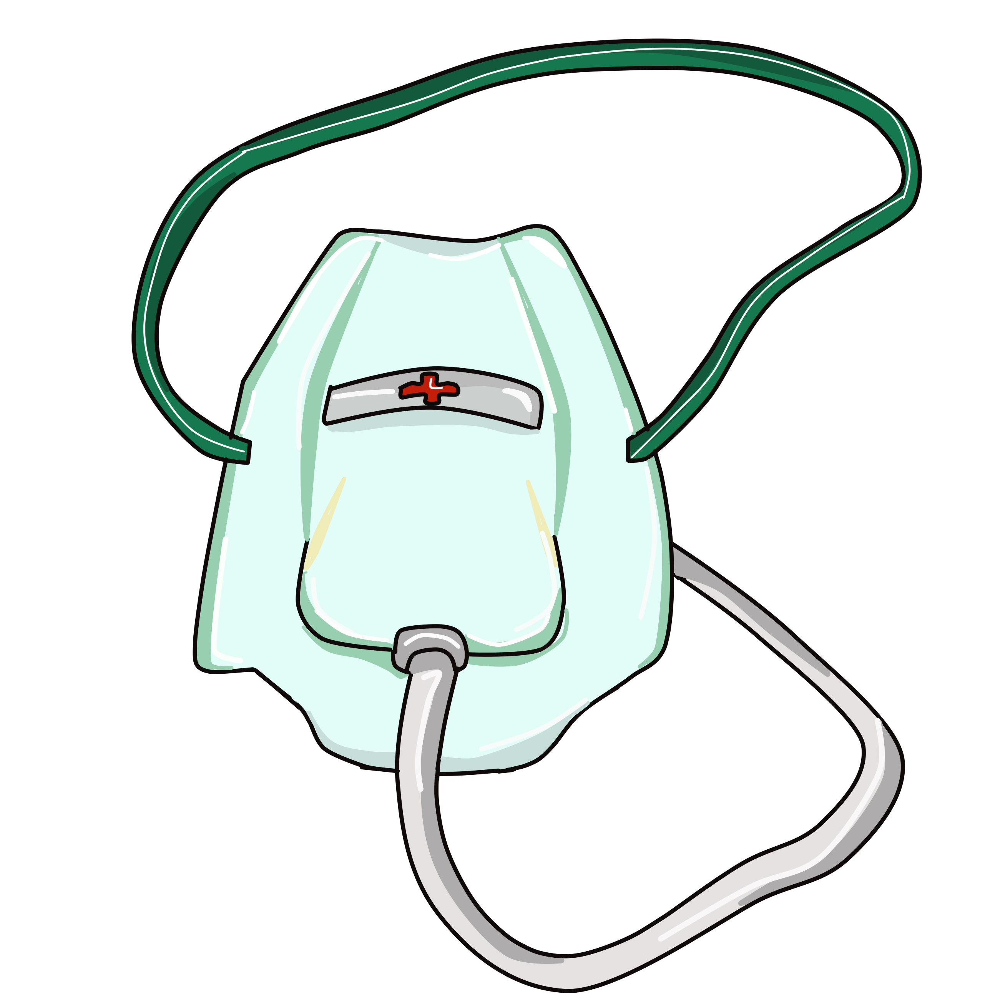

Our Features

Oxygen Mask Detection
It detects whether the patient has wore oxygen mask or not, If not wore a alert with a phone call to your number will be generated

Eye Tracking for ICU/Coma Patients
It detects the eyes of the ICU/Coma Patients, If opened a alert with a phone call to your number will be generated

Motion
It detects the patient movements in the room, It tracks whether the patient is sitting, walking or sleeping